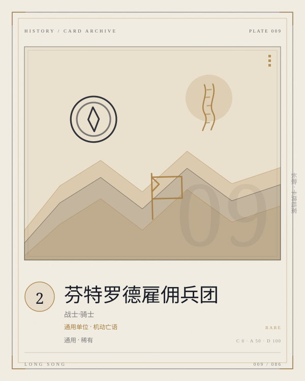

PLATE 009 / 086FENTRO-COMPANY
卡面为程序生成的概念图版；卡文与规则以本页正文为准。
CARD / GENERAL / 单位
芬特罗德雇佣兵团
通用单位 · 机动亡语
通用稀有单位COST 2战士·骑士单位亡语
【机动】【亡语】：若有其他己方单位，抽一张牌。
- COST
- 2
- C / A / D
- 0 / 50 / 100
- GROUP
- 通用单位
- LIMIT
- 4构筑上限
归属 通用 · 通用 · 通用 · 稀有。上限字段为「4」；原典未列上限的卡，页面不替它补。
关联 LINKS · 出边 + 入边 · 同目标去重
关联不是规则联动。它记录这张卡在设计与叙事上依赖谁、被谁依赖；跨阵营的边只标「对照」。
被检索
调度
调度能稳定把它抽出来
同族
兜帽怪盗
都是零费行动、靠站位和死亡吃饭的单位
对照
格兰蒂亚守卫军
雇佣兵为自己，守卫军为城墙
词条 KEYWORDS IN TEXT
机动加入战场的当回合即可行动。
亡语被消灭时即刻生效。
ARCHIVIST'S NOTE
肥鱼碎碎念
两费，0C/50A/100D，机动，亡语：若有其他己方单位，抽一张。它是中立通用池唯一的单位，也是通用池里唯一能「自己死掉换一张牌」的牌。
0 行动花费、50 攻、100 防：它打不死人，也挡不住太多；它的价值在于「机动」和「亡语」同时存在：当回合就能动，死了还能补一张。你花两费，买的是一张牌的位置和一个能动的身体。
它不属于格兰蒂亚体系，也不属于任何一个英雄。它是芬特罗德的雇佣兵——谁给钱就跟谁走。这张牌在叙事上是通用池的「外来者」，在机制上也是：它不服务任何一条轴，只服务「单位数量」本身。
—— 归档者，读这张卡的时候